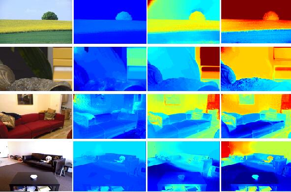

(宋文凤)
Algorithm Engineer
Beihang Univeristy
Computer Vision
Email: songwenfenga@gmail.com
Tel: 18810318719
Github: https://github.com/buaaswf
CSDN: https://blog.csdn.net/swfa1
My research interests include computer vision and visual perception (e.g., object recognition, localization, segmentation, pose estimation) especially in the field of scene segmentation. The experience in the State Key Laboratory of Virtual Reality Technology and System of Beihang motivates my interest and deep understanding of deep learning on Computer-assisted Diagnosis (CAD). My research domain is scene understanding and environment perception based on deep learning, including object detection based on image and video including unbalance dataset, depth estimation, person reid, UAV tracking. Here is the link of my CV.
If you are interested in my topics , please send me an email.
Beihang University
Doctor's Degree, Computer Science
From Sept. 2012 to present
Real-time Iris Segmentation System
[Objective] Overcome the challenge of various poses, illuminations and occlusions , and make efficient use of scarce resources available on embedded platforms for semantic segmentation. [Method] A multi-task cascaded CNNs based framework was proposed for joint face detection, and we adopts ENet-based to implement real-time segmentation, which combine attention mechanism and spatial pyramid to extract precise dense features for pixel labelling and requiring low latency . [Result] Our proposed approach achieves performance of average accuracy 94.09%, Mean IOU 93.54%, and average processing time 68.78 FPS.Scene Segmentation based on 3D point cloud for safe driving
[Objective] In order to associating instance and semantic segmentation on point clouds and explore the relationships between them. [Method] We present a powerful framework for instance and semantics segmentation on point clouds, with a Pyramid Attention module for semantic segmentation task and added to instance feature matrix, we designed an effective decoder module Global Attention for instance segmentation and fused with semantics segmentation matrix. [Result] Our algorithm can achieve good performance while guarantee both scalability and feasibility of commercialisation.Lung Cancer Detection based on 3D U-net with CT images
[Objective] To solve the problem of resolution loss and class imbalance when crop or downsample, and minimal computational overhead. [Method] We described a two-stage U-Net-like framework for two-class segmentation which can directly make prediction for data with original resolution due to its SRCNN-inspired architecture. We adopt a novel attention gate model for CT images that automatically learns to focus on target structures of varying shapes and sizes integrated into standard 3D U-Net model , and trained with a simply weighted dice coecients. [Result] The framework we presented consistently improve the prediction performance while preserving computational efficiency.Classification of breast cancer cells and nidus detection based on CNN
[Objective] Because of the large scale of Whole Slice Images, which poses great challenges for scan whole image manually . [Method] We adopt Densely connected Atrous Spatial Pyramid Pooling to capture global context information , that fuse a set of atrous convolutional layers densely while generates multi-scale features that cover a larger scale range densely without increasing the model size . Post-processing is applied to the test stage for further optimization, and OHEM is adopt to false positive excavation, so as to improve performance. [Result] Our algorithm can achieve classification accuracy 90.75%, which is of great clinical value.